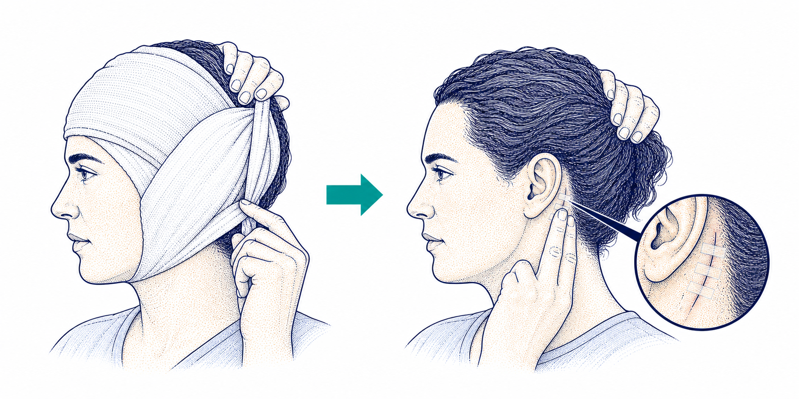
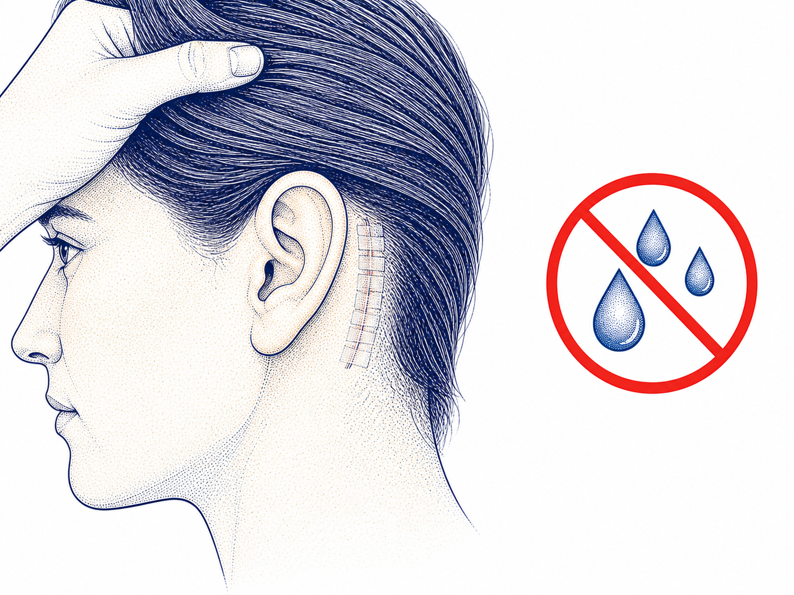
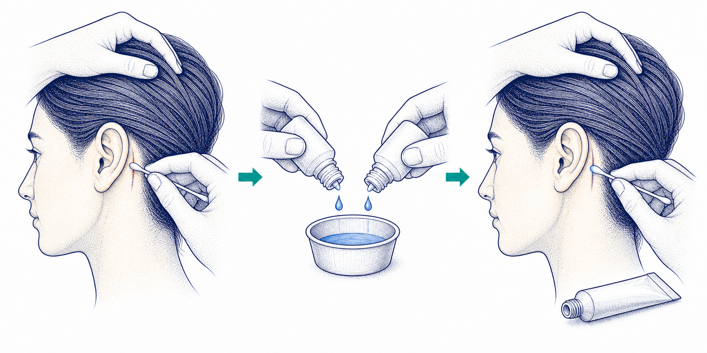
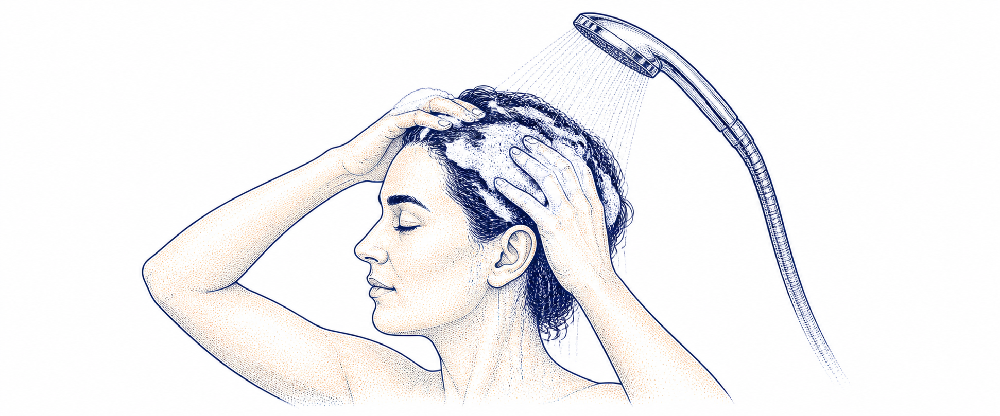
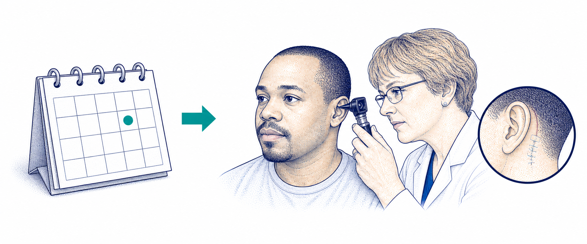

Care for the surgery site
Recovery days 0–14
1Day 2

Remove the head dressing. Then check behind the ear.
Two days after surgery, take off the mastoid dressing and look for tape covering the incision.
Visually supported · clinical review pending2Tape present · keep dry

If there is tape
Keep the area dry until three days after surgery. Do not clean it before then.
Visually supported · clinical review pending3No tape · 2× a day

If there is no tape
Clean the incision edges gently twice a day with the 50/50 mix, then apply antibiotic ointment.
Applicator technique needs review4Day 3

Showering again
Three days after surgery, you may shower and wash your hair.
5About 2 weeks

Your wound check
Return for a wound check and ear exam. The stitches dissolve on their own.